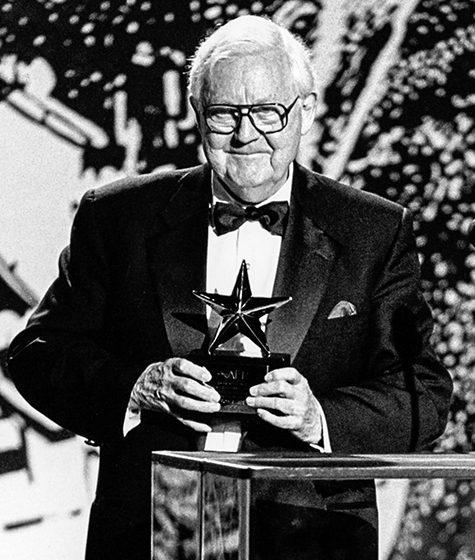
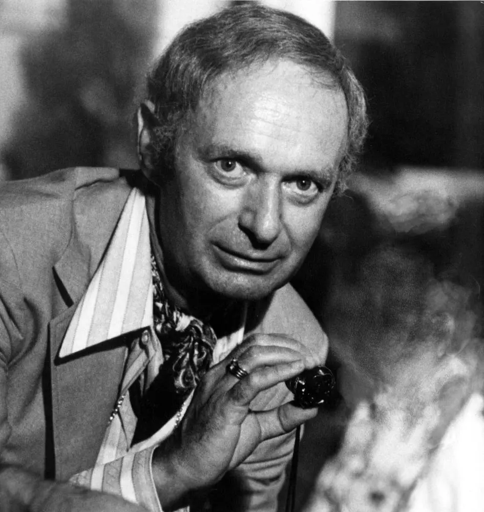

Director, Writer, & Composers
Robert Wise: The Original Craftsman
(1914-2005)
Chosen to direct the film in 1962 by American screenwriter Ernest Lehman. Getting Wise to take over this movie was not an easy feat, but Lehman knew he had to be the one directing the film. Wise’s earlier projects included The Curse of the Cat People and West Side Story. After the Sound of Music, he directed a couple of other films (Star!, Star Trek: The Motion Picture, and more) until he shifted to a career as president of the Academy of Motion Picture Arts and Science. Wise passed away from a heart attack in September 2005 at age 91.
Ernest Lehman: The Genius Behind the Script
(1915-2005)
Ernest Lehman, a renowned screenwriter in the mid-1960s, was already celebrated for his work on films like "North by Northwest" and "West Side Story" when he adapted "The Sound of Music" for the big screen. His exceptional screenplay was key to the film's immense success, blending humor, emotion, and music seamlessly. The adaptation became one of the most beloved musicals ever, cementing Lehman's reputation as a masterful storyteller. Although he passed away in 2005, Lehman's legacy endures, with his work continuing to influence screenwriters and filmmakers, and "The Sound of Music" standing as a testament to his remarkable talent.
Did you know?
Although he never officially admitted to it, the reason Robert Wise agreed to direct The Sound of Music was because Lehman had smuggled a copy of his screenplay to Wise’s agent! While Wise was reluctant to take on the musical-adaptation at first, he was pleasantly surprised after reading Lehman’s script and decided the movie had potential.
Rodgers and Hammerstein
(1902-1979) | (1895-1960)
Richard Rodgers and Oscars Hammerstein II, the legendary musical theater duo, were responsible for composing the music and lyrics for The Sound of Music. Their collaboration on this classic musical resulted in memorable songs such as "Edelweiss," "My Favorite Things," and "Do-Re-Mi," which have become iconic in the realm of musical theater. Their work on The Sound of Music not only showcased their talent for creating emotionally resonant and melodic compositions but also cemented their legacy as pioneering figures in American musical theater.
Their company, The Rodgers & Hammerstein Organization, still continues to play a crucial role in producing and licensing their musicals, ensuring that the legacy of their works is preserved and that they continue to be performed and appreciated by new audiences.